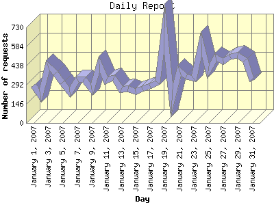

Report generated by Analog 6.0 and Report Magic 2.21
|
Web Server Statistics for "Harish Narayanan (hnarayan) - January 2007" Report generated by Analog 6.0 and Report Magic 2.21 |
The Daily Report identifies the activity for each day within the reporting period. Remember that one page hit can result in several server requests as the images for each page are loaded.

| Day | Number of requests | Number of bytes transferred | Percentage of the bytes | Percentage of the requests | |
|---|---|---|---|---|---|
| 1. | January 1, 2007 | 289 | 65.903 MB | 4.02% | 2.56% |
| 2. | January 2, 2007 | 209 | 14.170 MB | 0.86% | 1.85% |
| 3. | January 3, 2007 | 438 | 28.923 MB | 1.76% | 3.88% |
| 4. | January 4, 2007 | 382 | 28.989 MB | 1.77% | 3.38% |
| 5. | January 5, 2007 | 309 | 73.094 MB | 4.46% | 2.74% |
| 6. | January 6, 2007 | 235 | 28.586 MB | 1.74% | 2.08% |
| 7. | January 7, 2007 | 335 | 31.848 MB | 1.94% | 2.97% |
| 8. | January 8, 2007 | 332 | 29.441 MB | 1.80% | 2.94% |
| 9. | January 9, 2007 | 254 | 18.945 MB | 1.16% | 2.25% |
| 10. | January 10, 2007 | 448 | 26.031 MB | 1.59% | 3.97% |
| 11. | January 11, 2007 | 324 | 14.602 MB | 0.89% | 2.87% |
| 12. | January 12, 2007 | 342 | 21.905 MB | 1.34% | 3.03% |
| 13. | January 13, 2007 | 254 | 12.906 MB | 0.79% | 2.25% |
| 14. | January 14, 2007 | 261 | 36.208 MB | 2.21% | 2.31% |
| 15. | January 15, 2007 | 239 | 27.571 MB | 1.68% | 2.12% |
| 16. | January 16, 2007 | 261 | 17.295 MB | 1.05% | 2.31% |
| 17. | January 17, 2007 | 279 | 6.969 MB | 0.42% | 2.47% |
| 18. | January 18, 2007 | 310 | 18.290 MB | 1.12% | 2.75% |
| 19. | January 19, 2007 | 724 | 11.710 MB | 0.71% | 6.42% |
| 20. | January 20, 2007 | 171 | 49.509 MB | 3.02% | 1.51% |
| 21. | January 21, 2007 | 401 | 23.004 MB | 1.40% | 3.55% |
| 22. | January 22, 2007 | 354 | 30.096 MB | 1.84% | 3.14% |
| 23. | January 23, 2007 | 340 | 23.107 MB | 1.41% | 3.01% |
| 24. | January 24, 2007 | 603 | 71.708 MB | 4.37% | 5.34% |
| 25. | January 25, 2007 | 394 | 102.644 MB | 6.26% | 3.49% |
| 26. | January 26, 2007 | 503 | 100.467 MB | 6.13% | 4.46% |
| 27. | January 27, 2007 | 467 | 111.596 MB | 6.81% | 4.14% |
| 28. | January 28, 2007 | 507 | 160.111 MB | 9.77% | 4.49% |
| 29. | January 29, 2007 | 516 | 147.350 MB | 8.99% | 4.57% |
| 30. | January 30, 2007 | 481 | 182.781 MB | 11.15% | 4.26% |
| 31. | January 31, 2007 | 322 | 123.711 MB | 7.55% | 2.85% |
Most active day January 19, 2007 : 608 pages sent. 724 requests handled. 12,278,309.00 served.
Daily average: 364 requests handled. 52.886 MB served.
This report was generated on February 4, 2007 20:31.
Report time frame January 1, 2007 00:02 to January 31, 2007 23:51.
| Web statistics report produced by: | |
 Analog 6.0 Analog 6.0 |  Report Magic 2.21 Report Magic 2.21 |